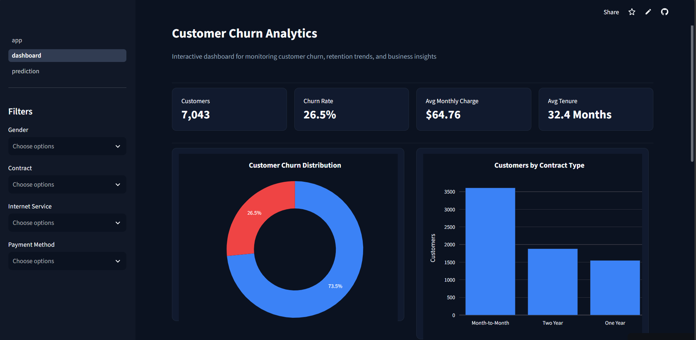
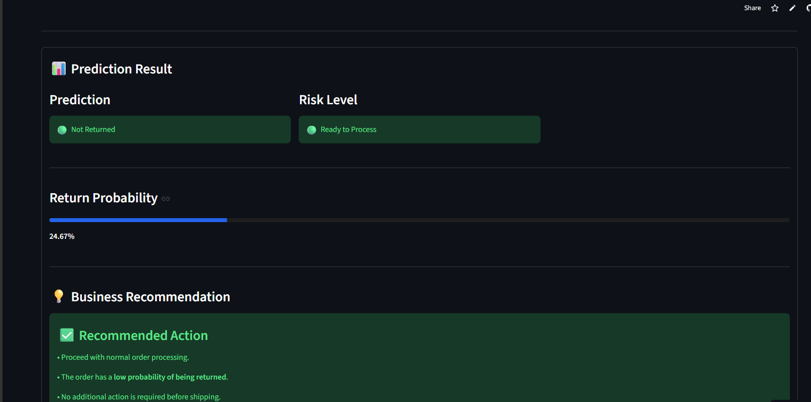
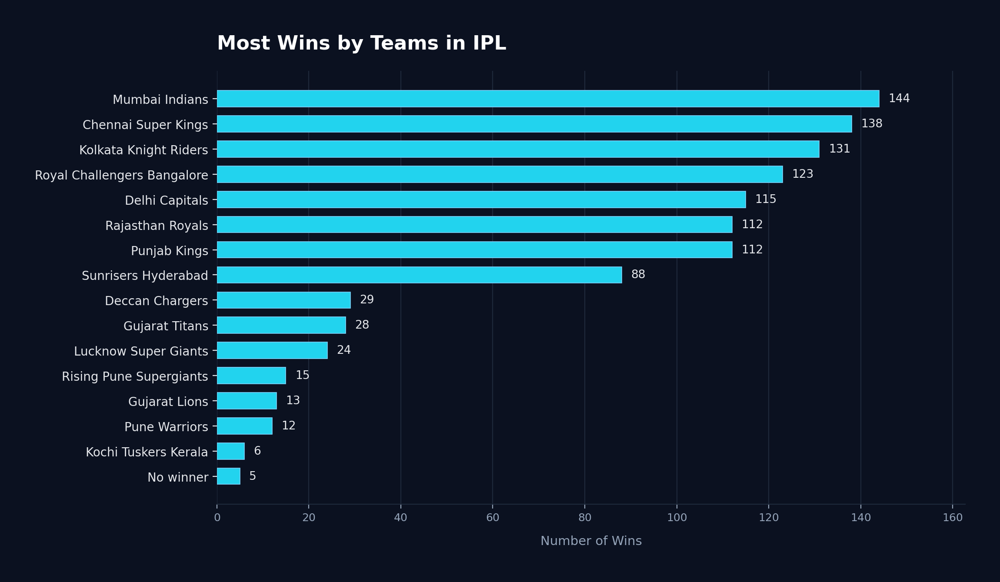

Mission
Turn data into decisions that create real business value.
Combining analytical thinking, technical skills, and business context to build solutions that stakeholders can actually act on.
Data Analyst Data Scientist
I build data pipelines, dashboards, and analytical solutions that transform complex data into clear, actionable insights—helping stakeholders make informed, data‑driven decisions.
Add assets/images/profile.jpg
About
I am an aspiring Data Analyst with a strong foundation in SQL, Python, Excel, Power BI, Statistics, and Machine Learning.
I enjoy transforming raw data into meaningful insights that help organizations make informed, data‑driven decisions. My approach goes beyond tools—I focus on understanding the “why” behind the data, combining analytical thinking, technical skills, and business context to solve real‑world problems.
Through hands‑on projects, I’ve built experience in data cleaning, ETL, exploratory data analysis, feature engineering, dashboard development, KPI reporting, and predictive modeling.
Mission
Combining analytical thinking, technical skills, and business context to build solutions that stakeholders can actually act on.
Vision
Combining analytical thinking, machine learning, and business understanding to create practical, intelligent solutions.
Technical Skills
Technologies I use to analyze data, build decision‑support tools, and develop predictive solutions.
Experience
Hands‑on experience across data analytics, business intelligence, machine learning, and Python development—building practical solutions from data and turning analysis into actionable insights.
BR TechGeeks Private Limited
What I Worked On
Pickl.AI / TransOrganAnalytics
What I Worked On
AppSquadz Technologies
What I Worked On
Projects

Project ScreenshotBuilt an end‑to‑end machine learning application to predict customer churn, analyze churn behavior, and support data‑driven retention strategies.
Businesses need to identify customers at risk of leaving and understand factors driving churn.
Predict customer churn, identify key churn drivers, and support customer retention decisions.
Telecom customer data including demographics, contracts, payment methods, charges, tenure, and other customer attributes.
96.45% Accuracy · 96.0% Precision · 90.0% Recall · 0.992 ROC‑AUC
Helps businesses identify at‑risk customers, understand churn patterns, and support targeted retention strategies.

Project ScreenshotBuilt an end‑to‑end machine learning solution to predict whether an e‑commerce order is likely to be returned, enabling proactive decisions before shipping.
Product returns increase operational costs and affect customer satisfaction.
Predict return probability and provide risk‑based recommendations for proactive order decisions.
Customer, product, and order information.
67% Accuracy · 0.73 ROC‑AUC
Helps identify potentially high‑risk orders before shipping and supports proactive review of return‑prone orders.

Project ScreenshotBuilt a machine learning application that predicts IPL match winners using historical match data and an interactive Streamlit interface.
Explore factors such as teams, toss decisions, venue, and location that influence IPL match outcomes.
Develop a machine learning model to predict IPL match winners.
Historical IPL match data containing teams, toss information, venue, city, and match winner.
68% Accuracy
Demonstrates how historical sports data can be transformed into predictive insights while identifying influential factors behind outcomes.
 Project Screenshot
Project Screenshot
Analyzed pizza sales data using SQL and Power BI to uncover product performance, revenue trends, and customer ordering patterns.
Understand sales performance, product demand, and ordering patterns to support restaurant decisions.
Build an interactive dashboard for sales and revenue analysis.
Orders, order details, pizza products, sizes, prices, and categories.
Supports pricing, promotions, inventory, and staffing decisions.
 Project Screenshot
Project Screenshot
Interactive Power BI dashboard analyzing sales trends, customer behavior, regional performance, product categories, and shipping insights.
Businesses need a centralized way to monitor sales, customer, regional, product, and shipping performance.
Build an interactive BI dashboard that transforms sales data into actionable business insights.
Sales data covering products, customers, categories, regions, cities, and shipping information.
Helps stakeholders monitor performance, identify profitable segments, and support shipping and strategic planning decisions.
 Project Screenshot
Project Screenshot
Analyzed coffee shop transactions to understand customer behavior, product demand, store performance, and ordering patterns.
Understand customer purchasing behavior, product demand, store performance, and peak ordering periods.
Build an interactive dashboard to monitor coffee shop performance and customer trends.
Transaction date, time, store location, product category, product type, size, quantity, price, and sales amount.
Supports inventory planning, product promotion, customer engagement, and store‑level decisions.
 Project Screenshot
Project Screenshot
Designed and implemented a relational bookstore database to organize books, authors, publishers, and genres for structured SQL analysis.
Bookstore information needs to be organized across connected entities for efficient querying and analysis.
Build a relational database that enables structured SQL‑based analysis.
Books · Authors · Publishers · Genres
Database Design · SQL Queries · Joins · Aggregations · Relational Modeling
Provides a structured foundation for querying and analyzing bookstore information.
Freelance Services
From raw data to insights, dashboards, automation, and intelligent solutions, I help turn data into something useful.
Clean, organized, ready‑to‑use data
Find the story hiding in your numbers
Live dashboards you can check in seconds
Stop building the same report by hand every week
Predict what’s coming, not just report what happened
Put AI to work on your data and workflows
Let’s Work Together
Whether you need data organized, analyzed, visualized, automated, or turned into an intelligent solution, let’s discuss what you’re trying to achieve.
Let’s TalkContact
I’m open to Data Analytics and Data Science opportunities, freelance projects, and collaborations.